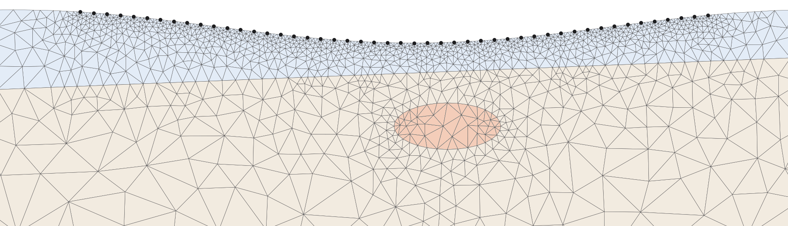
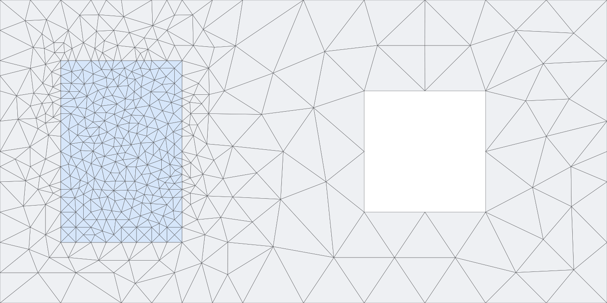

Quality meshes from the geometry you draw
rustmesh is a mesh generator written in Rust, with Python bindings and a model builder that runs in the browser. You give it outlines, zones, holes, lines and points; it returns quality triangles, or tetrahedra in 3D, with the markers you set.
Mesh Studio computes in your browser; nothing is uploaded. Pre-alpha. MIT OR Apache-2.0.

What it does
The 2D mesher is the main part; 3D tetrahedral meshing is experimental.
2D quality meshes
Constrained Delaunay refinement with a smallest-angle target and a largest area per region. Holes are left empty, and segments that cross are split where they cross.
Local cell sizes
Cells sized at chosen points, such as electrodes or wells, and growing away from them. Segments can be kept whole during refinement.
A report with every mesh
Whether refinement finished and whether each requested limit holds. Strict calls fail with the mesh and its report instead.
3D, experimental
Tetrahedra inside a triangulated surface, with material regions, cavities, volume limits and a minimum dihedral target.
Exports
VTU for ParaView, Gmsh 2.2 in 2D and 3D, E4D mesh files, and pygimli.Mesh objects.
Same input, same mesh
A geometry gives the same mesh on every run, and the browser build gives the same mesh as the native one.
Mesh Studio
A geometry and mesh builder for the browser and the desktop. Draw a domain
with its zones, holes, lines and points, or start from a template, build the mesh and
check its report. Projects save as JSON, and meshes export as .vtu or
.msh.
- Eleven 2D templates: a rectangle, a plate with a hole, a channel past a cylinder, an L-shaped domain, resistivity, crosshole, refraction, gravity or magnetic and magnetotelluric surveys, an aquifer with a pumping well, and a watershed.
- 3D templates: a block, layered ground, a sphere and a torus.
- The web app runs the Rust mesher as WebAssembly in a Web Worker, so the page keeps responding and Stop ends a build at once.
- The desktop app is the same program built natively, for large meshes and batches, with a command line and an MCP server.
The web app starts with a budget of 500,000 nodes, which can be raised; WebAssembly memory stops at 4 GB.
From Python
A box with a zone of finer cells and a hole. mesh holds NumPy
arrays: nodes, triangles, cell markers, edges with their markers, and the map from your
vertices to mesh nodes.
import rustmesh
vertices = [[0, 0], [10, 0], [10, 5], [0, 5], # box
[1, 1], [3, 1], [3, 4], [1, 4], # zone
[6, 1.5], [8, 1.5], [8, 3.5], [6, 3.5]] # hole
loop = lambda start: [[start + i, start + (i + 1) % 4]
for i in range(4)]
mesh = rustmesh.triangulate_strict(
vertices,
loop(0) + loop(4) + loop(8),
segment_markers=[1] * 4 + [2] * 4 + [3] * 4,
regions=[[0.5, 0.5, 1, 0.5], [2, 2.5, 2, 0.02]],
holes=[[7, 2.5]],
min_angle=28,
)
print(len(mesh.triangles), mesh.report["complete"])
Install
The Python package builds from source with maturin and needs a Rust toolchain (1.83 or newer) and Python 3.10 or newer.
git clone https://github.com/geohang/rustmesh
cd rustmesh
pip install .The Rust crate is crates/rustmesh; use it as a path or git
dependency. The desktop app: cargo run --release -p rustmesh-app --bin rustmesh-app.
Status and use
- Angle targets up to about 30° are practical in 2D. Cells next to small input angles or kept segments can miss the target; the report counts them.
- 3D meshing is experimental: constraint recovery is bounded and sliver removal is best effort (mesh3d.md).
- rustmesh was written for geophysical inversion.
rustmesh.pygimli.create_meshcan stand in for pyGIMLi's 2D mesher, and the templates follow pyGIMLi's marker conventions. - PyHydroGeophysX can use rustmesh as its mesher.